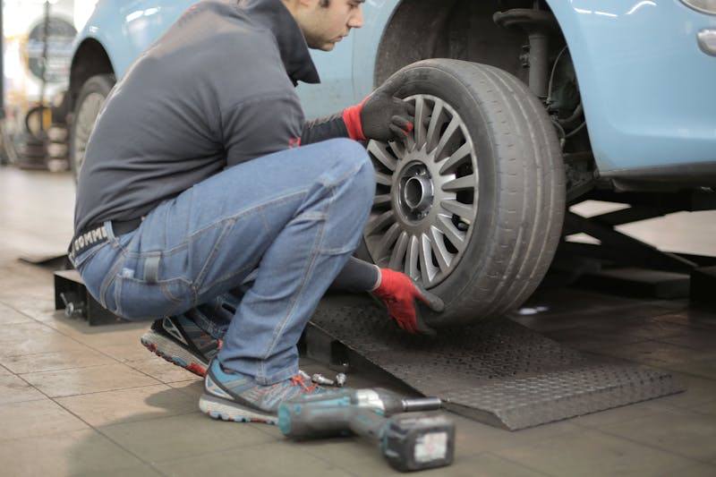

Preventive Maintenance
The best repair is the one you never need — stay ahead of problems.
Scheduled Vehicle Maintenance in Cedar Rapids
Keeping up with your vehicle's maintenance schedule is the most effective way to avoid expensive breakdowns and extend the life of your car. At Cedar Automotive, we follow your manufacturer's recommended service intervals and perform the maintenance your car actually needs — nothing more, nothing less.
From basic items like oil changes and air filter replacements to more involved services like timing belt replacement and spark plug service, we handle all scheduled maintenance for every make and model. We keep track of what's been done and what's coming up, so you always know where your vehicle stands.
European vehicles often have more complex maintenance schedules with specific requirements. We follow BMW, Audi, Mercedes, and Volvo factory service intervals using the correct parts and fluids — maintaining your warranty compliance without the dealership markup. Iowa's climate puts extra stress on your vehicle, making preventive maintenance even more important here than in milder climates.
Maintenance Services We Provide
- Factory-scheduled maintenance (all intervals)
- Serpentine belt and timing belt replacement
- Spark plug replacement and tune-ups
- Air filter and cabin filter replacement
- Coolant system service
- Hose inspection and replacement
- Battery testing and replacement
- Wiper blade replacement
- Multi-point vehicle inspection
- European vehicle factory maintenance schedules

Why Preventive Maintenance Matters
Save Money Long-Term
A $200 timing belt service prevents a $3,000 engine repair. Maintenance pays for itself many times over.
Preserve Resale Value
A well-maintained vehicle with service records commands a higher price when it's time to sell or trade.
Reliability You Can Count On
Regular maintenance means fewer breakdowns, fewer tow trucks, and fewer days without your car.
Related Services
Frequently Asked Questions
What does preventive maintenance include?
Preventive maintenance covers scheduled services like oil changes, filter replacements, fluid checks, belt and hose inspection, tire rotation, brake inspection, and battery testing — everything your manufacturer recommends to keep your car running right.
How often should I bring my car in for maintenance?
Follow your vehicle's manufacturer maintenance schedule, typically every 5,000 to 10,000 miles or every 6-12 months. We can pull up your specific schedule and help you stay on track.
Why is preventive maintenance important?
Regular maintenance catches small problems before they become expensive repairs. A $50 belt replacement now prevents a $1,000+ engine repair later. It also maintains your vehicle's resale value and keeps your warranty valid.